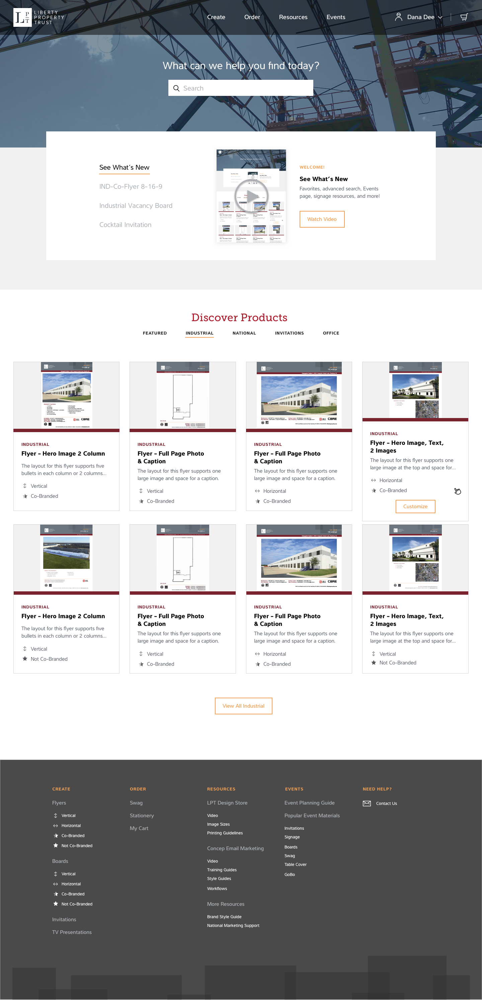
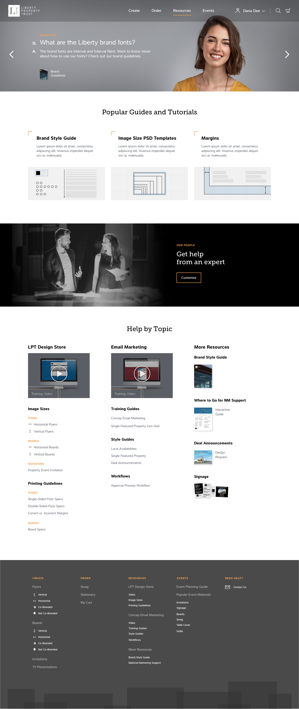

Homepage
The client wanted an easy to use faux-modal that had the top four products ordered at that time. Next, the discover products section was tabbed so the user could look into the five sections and decide which product they needed quickly.
Events
The Events page was very similar to the Homepage with the box on top with Event-specific marketing materials. Everything else is in a grid to make it responsive and clean.

Resources
On this page, the client wanted an easy to use carousel with arrows that have some questions and answers to help the marketing user quickly. The carousel was one of the biggest challenges for me since I was unable to use Javascript on this platform I needed to find another way to code it. Unfortunately, we did have to make some sacrifices on design: on the carousel, I was unable to rotate the photos, so we just rotated the text and left the photo stationery.
